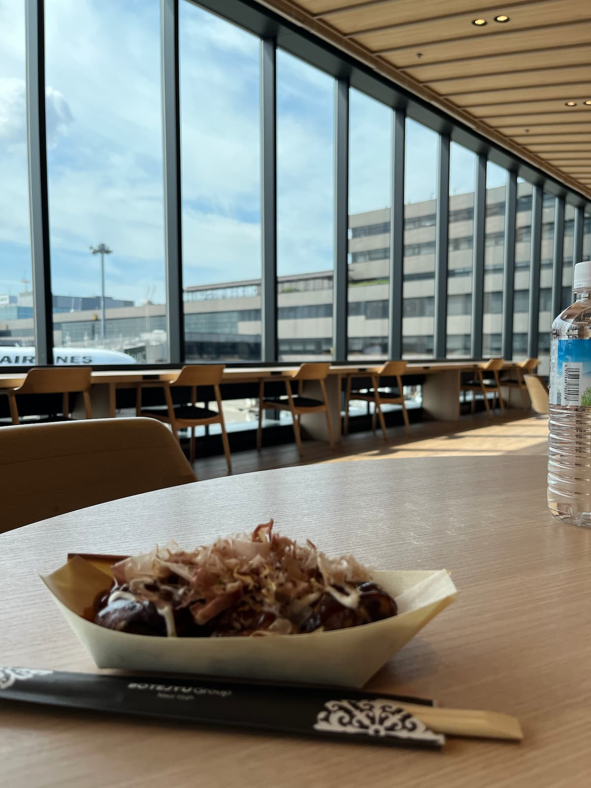

Tokyo, souvenirs ordinaires
Ce site est un carnet visuel.
Une semaine passée à Tokyo, en août 2025, à marcher sous la chaleur, à lever les yeux, à m’arrêter souvent dans des moments sans importance apparente.
Les photos ici ne cherchent pas la perfection : elles capturent des instants, des lumières, des quartiers traversés.
Juste ce que j’ai vu, ce que j’ai ressenti, ce que j’ai eu envie de garder.
Publier ici, c’est prolonger un peu le voyage.
